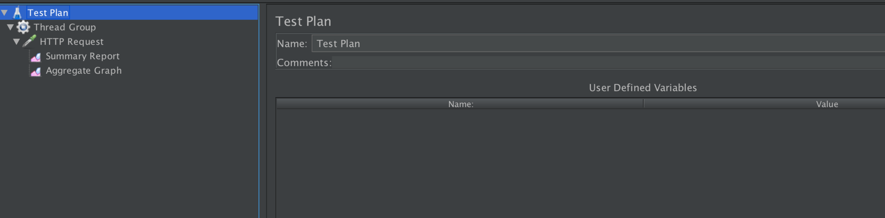
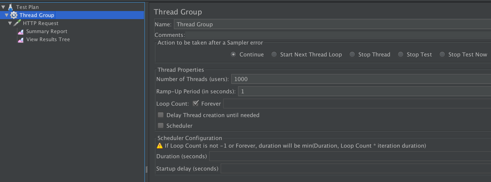
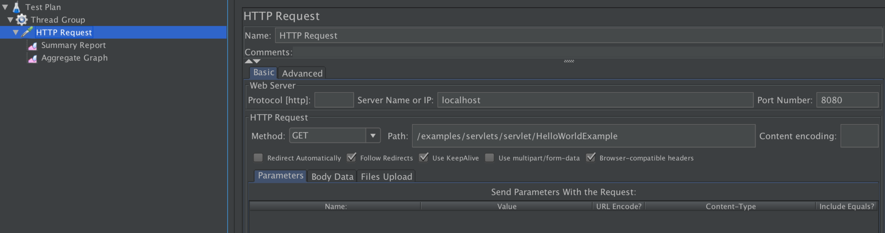
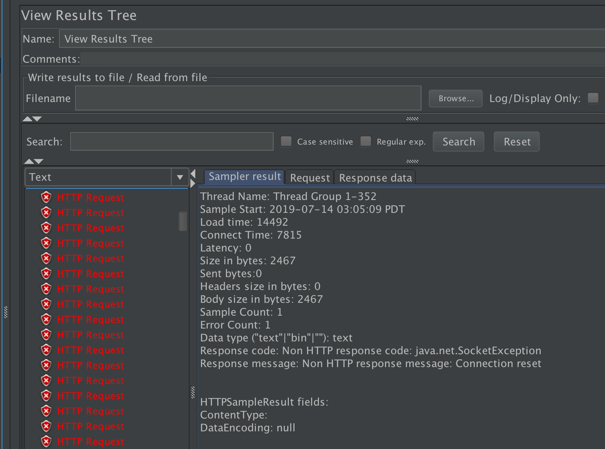
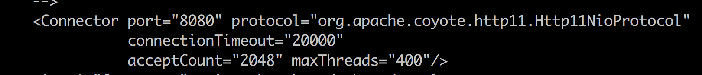
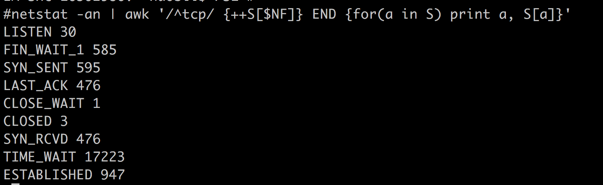

- 00 开篇词 Java程序员如何快速成长？.md.html
- 01 Web容器学习路径.md.html
- 02 HTTP协议必知必会.md.html
- 03 你应该知道的Servlet规范和Servlet容器.md.html
- 04 实战：纯手工打造和运行一个Servlet.md.html
- 05 Tomcat系统架构（上）： 连接器是如何设计的？.md.html
- 06 Tomcat系统架构（下）：聊聊多层容器的设计.md.html
- 07 Tomcat如何实现一键式启停？.md.html
- 08 Tomcat的“高层们”都负责做什么？.md.html
- 09 比较：Jetty架构特点之Connector组件.md.html
- 10 比较：Jetty架构特点之Handler组件.md.html
- 11 总结：从Tomcat和Jetty中提炼组件化设计规范.md.html
- 12 实战：优化并提高Tomcat启动速度.md.html
- 13 热点问题答疑（1）：如何学习源码？.md.html
- 14 NioEndpoint组件：Tomcat如何实现非阻塞I_O？.md.html
- 15 Nio2Endpoint组件：Tomcat如何实现异步I_O？.md.html
- 16 AprEndpoint组件：Tomcat APR提高I_O性能的秘密.md.html
- 17 Executor组件：Tomcat如何扩展Java线程池？.md.html
- 18 新特性：Tomcat如何支持WebSocket？.md.html
- 19 比较：Jetty的线程策略EatWhatYouKill.md.html
- 20 总结：Tomcat和Jetty中的对象池技术.md.html
- 21 总结：Tomcat和Jetty的高性能、高并发之道.md.html
- 22 热点问题答疑（2）：内核如何阻塞与唤醒进程？.md.html
- 23 Host容器：Tomcat如何实现热部署和热加载？.md.html
- 24 Context容器（上）：Tomcat如何打破双亲委托机制？.md.html
- 25 Context容器（中）：Tomcat如何隔离Web应用？.md.html
- 26 Context容器（下）：Tomcat如何实现Servlet规范？.md.html
- 27 新特性：Tomcat如何支持异步Servlet？.md.html
- 28 新特性：Spring Boot如何使用内嵌式的Tomcat和Jetty？.md.html
- 29 比较：Jetty如何实现具有上下文信息的责任链？.md.html
- 30 热点问题答疑（3）：Spring框架中的设计模式.md.html
- 31 Logger组件：Tomcat的日志框架及实战.md.html
- 32 Manager组件：Tomcat的Session管理机制解析.md.html
- 33 Cluster组件：Tomcat的集群通信原理.md.html
- 34 JVM GC原理及调优的基本思路.md.html
- 35 如何监控Tomcat的性能？.md.html
- 36 Tomcat I_O和线程池的并发调优.md.html
- 37 Tomcat内存溢出的原因分析及调优.md.html
- 38 Tomcat拒绝连接原因分析及网络优化.md.html
- 39 Tomcat进程占用CPU过高怎么办？.md.html
- 40 谈谈Jetty性能调优的思路.md.html
- 41 热点问题答疑（4）： Tomcat和Jetty有哪些不同？.md.html
- 特别放送 如何持续保持对学习的兴趣？.md.html
- 结束语 静下心来，品味经典.md.html
- 捐赠
38 Tomcat拒绝连接原因分析及网络优化
专栏上一期我们分析各种JVM OutOfMemory错误的原因和解决办法，今天我们来看看网络通信中可能会碰到的各种错误。网络通信方面的错误和异常也是我们在实际工作中经常碰到的，需要理解异常背后的原理，才能更快更精准地定位问题，从而找到解决办法。
下面我会先讲讲Java Socket网络编程常见的异常有哪些，然后通过一个实验来重现其中的Connection reset异常，并且通过配置Tomcat的参数来解决这个问题。
常见异常
java.net.SocketTimeoutException
指超时错误。超时分为连接超时和读取超时，连接超时是指在调用Socket.connect方法的时候超时，而读取超时是调用Socket.read方法时超时。请你注意的是，连接超时往往是由于网络不稳定造成的，但是读取超时不一定是网络延迟造成的，很有可能是下游服务的响应时间过长。
java.net.BindException: Address already in use: JVM_Bind
指端口被占用。当服务器端调用new ServerSocket(port)或者Socket.bind函数时，如果端口已经被占用，就会抛出这个异常。我们可以用netstat –an命令来查看端口被谁占用了，换一个没有被占用的端口就能解决。
java.net.ConnectException: Connection refused: connect
指连接被拒绝。当客户端调用new Socket(ip, port)或者Socket.connect函数时，可能会抛出这个异常。原因是指定IP地址的机器没有找到；或者是机器存在，但这个机器上没有开启指定的监听端口。
解决办法是从客户端机器ping一下服务端IP，假如ping不通，可以看看IP是不是写错了；假如能ping通，需要确认服务端的服务是不是崩溃了。
java.net.SocketException: Socket is closed
指连接已关闭。出现这个异常的原因是通信的一方主动关闭了Socket连接（调用了Socket的close方法），接着又对Socket连接进行了读写操作，这时操作系统会报“Socket连接已关闭”的错误。
java.net.SocketException: Connection reset/Connect reset by peer: Socket write error
指连接被重置。这里有两种情况，分别对应两种错误：第一种情况是通信的一方已经将Socket关闭，可能是主动关闭或者是因为异常退出，这时如果通信的另一方还在写数据，就会触发这个异常（Connect reset by peer）；如果对方还在尝试从TCP连接中读数据，则会抛出Connection reset异常。
为了避免这些异常发生，在编写网络通信程序时要确保：
- 程序退出前要主动关闭所有的网络连接。
- 检测通信的另一方的关闭连接操作，当发现另一方关闭连接后自己也要关闭该连接。
java.net.SocketException: Broken pipe
指通信管道已坏。发生这个异常的场景是，通信的一方在收到“Connect reset by peer: Socket write error”后，如果再继续写数据则会抛出Broken pipe异常，解决方法同上。
java.net.SocketException: Too many open files
指进程打开文件句柄数超过限制。当并发用户数比较大时，服务器可能会报这个异常。这是因为每创建一个Socket连接就需要一个文件句柄，此外服务端程序在处理请求时可能也需要打开一些文件。
你可以通过lsof -p pid命令查看进程打开了哪些文件，是不是有资源泄露，也就是说进程打开的这些文件本应该被关闭，但由于程序的Bug而没有被关闭。
如果没有资源泄露，可以通过设置增加最大文件句柄数。具体方法是通过ulimit -a来查看系统目前资源限制，通过ulimit -n 10240修改最大文件数。
Tomcat网络参数
接下来我们看看Tomcat两个比较关键的参数：maxConnections和acceptCount。在解释这个参数之前，先简单回顾下TCP连接的建立过程：客户端向服务端发送SYN包，服务端回复SYN＋ACK，同时将这个处于SYN_RECV状态的连接保存到半连接队列。客户端返回ACK包完成三次握手，服务端将ESTABLISHED状态的连接移入accept队列，等待应用程序（Tomcat）调用accept方法将连接取走。这里涉及两个队列：
- 半连接队列：保存SYN_RECV状态的连接。队列长度由
net.ipv4.tcp_max_syn_backlog设置。 - accept队列：保存ESTABLISHED状态的连接。队列长度为
min(net.core.somaxconn，backlog)。其中backlog是我们创建ServerSocket时指定的参数，最终会传递给listen方法：
int listen(int sockfd, int backlog);
如果我们设置的backlog大于net.core.somaxconn，accept队列的长度将被设置为net.core.somaxconn，而这个backlog参数就是Tomcat中的acceptCount参数，默认值是100，但请注意net.core.somaxconn的默认值是128。你可以想象在高并发情况下当Tomcat来不及处理新的连接时，这些连接都被堆积在accept队列中，而acceptCount参数可以控制accept队列的长度，超过这个长度时，内核会向客户端发送RST，这样客户端会触发上文提到的“Connection reset”异常。
而Tomcat中的maxConnections是指Tomcat在任意时刻接收和处理的最大连接数。当Tomcat接收的连接数达到maxConnections时，Acceptor线程不会再从accept队列中取走连接，这时accept队列中的连接会越积越多。
maxConnections的默认值与连接器类型有关：NIO的默认值是10000，APR默认是8192。
所以你会发现Tomcat的最大并发连接数等于maxConnections + acceptCount。如果acceptCount设置得过大，请求等待时间会比较长；如果acceptCount设置过小，高并发情况下，客户端会立即触发Connection reset异常。
Tomcat网络调优实战
接下来我们通过一个直观的例子来加深对上面两个参数的理解。我们先重现流量高峰时accept队列堆积的情况，这样会导致客户端触发“Connection reset”异常，然后通过调整参数解决这个问题。主要步骤有：
1.下载和安装压测工具JMeter。解压后打开，我们需要创建一个测试计划、一个线程组、一个请求和，如下图所示。
测试计划：

线程组（线程数这里设置为1000，模拟大流量）：

请求（请求的路径是Tomcat自带的例子程序）：

2.启动Tomcat。
3.开启JMeter测试，在View Results Tree中会看到大量失败的请求，请求的响应里有“Connection reset”异常，也就是前面提到的，当accept队列溢出时，服务端的内核发送了RST给客户端，使得客户端抛出了这个异常。

4.修改内核参数，在/etc/sysctl.conf中增加一行net.core.somaxconn=2048，然后执行命令sysctl -p。
5.修改Tomcat参数acceptCount为2048，重启Tomcat。

6.再次启动JMeter测试，这一次所有的请求会成功，也看不到异常了。我们可以通过下面的命令看到系统中ESTABLISHED的连接数增大了，这是因为我们加大了accept队列的长度。

本期精华
在Socket网络通信过程中，我们不可避免地会碰到各种Java异常，了解这些异常产生的原因非常关键，通过这些信息我们大概知道问题出在哪里，如果一时找不到问题代码，我们还可以通过网络抓包工具来分析数据包。
在这个基础上，我们还分析了Tomcat中两个比较重要的参数：acceptCount和maxConnections。acceptCount用来控制内核的TCP连接队列长度，maxConnections用于控制Tomcat层面的最大连接数。在实战环节，我们通过调整acceptCount和相关的内核参数somaxconn，增加了系统的并发度。
课后思考
在上面的实验中，我们通过netstat命令发现有大量的TCP连接处在TIME_WAIT状态，请问这是为什么？它可能会带来什么样的问题呢？
不知道今天的内容你消化得如何？如果还有疑问，请大胆的在留言区提问，也欢迎你把你的课后思考和心得记录下来，与我和其他同学一起讨论。如果你觉得今天有所收获，欢迎你把它分享给你的朋友。
© 2019 - 2023 Liangliang Lee. Powered by gin and hexo-theme-book.